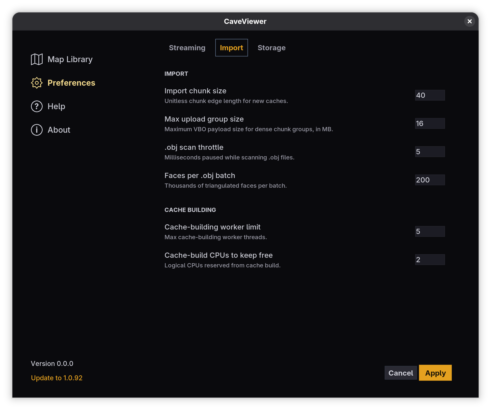
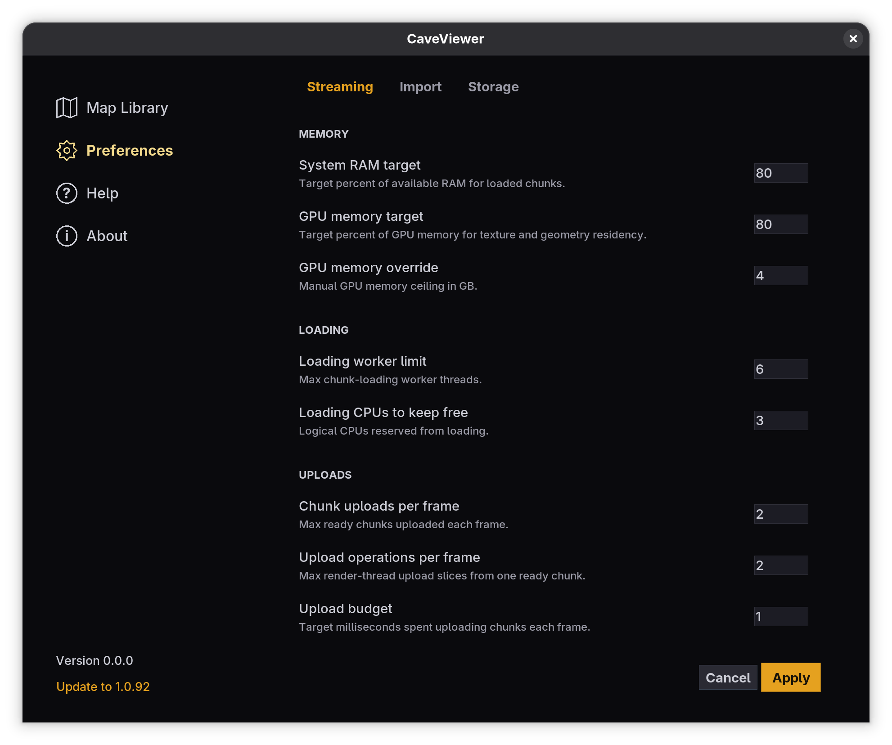

CaveViewer Documentation
System Requirements and Compatibility
CaveViewer is a desktop application for recent Windows, macOS, and Linux computers. A dedicated graphics card is not required, although faster hardware can load and display complex maps more quickly.
| Area | Guidance |
|---|---|
| Operating system | Windows 10 or 11, macOS on Apple silicon or Intel, or Linux on x86_64. CaveViewer is not designed for phones or tablets. |
| Memory | 16 GB of RAM is a practical starting point. Available memory limits how much nearby geometry and texture data can remain loaded. |
| Storage | Allow roughly 256 GB of free disk space when working with large source maps. CaveViewer builds a local cache during the first import, so the source files and generated cache both need room. |
| Graphics | Integrated graphics are supported. CaveViewer adjusts map residency to its detected graphics-memory budget; very large textures may appear softer when a smaller size is needed to stay within that budget. |
| Map formats | Open a textured OBJ map with its matching MTL and texture files, or a GLB map. Keep all companion files together and accessible when importing or rebuilding a cache. |
Performance depends on the map's physical scale, geometry density, texture sizes, and the computer running CaveViewer. The defaults suit most systems; use the tuning guidance below only when you encounter a specific limitation.
Installation
Windows
Run the setup file. Windows may identify CaveViewer as an unrecognized app. Microsoft does not yet recognize its publisher. Confirm that the installer came from the official CaveViewer site before proceeding. Depending on your Windows version, select More info → Run anyway.
macOS
Choose the download for Apple silicon or Intel, then drag CaveViewer into Applications. macOS may be unable to verify CaveViewer. Apple does not yet recognize its developer. After confirming the download source, go to System Settings → Privacy & Security → Open Anyway. Do not override a warning that says the app will damage your computer.
Linux
Allow the x86_64 AppImage to run, then open it. Linux does not display an equivalent publisher-verification warning.
Before You Tune
Open Preferences from the CaveViewer home screen. The settings covered here are divided between two tabs:
- Import controls how a map cache is built. Changes affect new imports. To apply them to an existing map, select the map in Map Library and choose Rebuild cache.
- Streaming controls how the compiled map is loaded and sent to the graphics processor while you explore it. These settings do not require a cache rebuild.
Change one setting at a time and test the same part of the map after each change. This makes it much easier to identify what helped.
Quick Recommendations
| What you notice | Change first | Direction |
|---|---|---|
| CaveViewer uses too much system memory | System RAM target | Lower it |
| Textures or geometry use too much graphics memory | GPU memory target | Lower it |
| Graphics-memory detection appears wrong | GPU memory override | Enter a conservative value in GB |
| Movement pauses while new areas appear | Upload budget | Lower it gradually |
| New areas take too long to appear | Upload budget | Raise it gradually |
| Import makes the computer unresponsive | Cache-building worker limit | Lower it |
| Import is slow and the computer has spare CPU and memory | Cache-building worker limit | Raise it gradually |
| Tight or winding passages load inefficiently | Import chunk size | Try a smaller value, then rebuild |
| Long, open passages contain too many small chunks | Import chunk size | Try a larger value, then rebuild |
| A dense map causes noticeable upload stalls | Max upload group size | Lower it, then rebuild |
Import Tuning

Import settings determine the structure of the generated map cache. They apply to the next map you import. To use them with a map that is already in the Map Library, choose Rebuild cache for that map.
Rebuilding is safe: CaveViewer prepares the replacement separately and keeps the existing cache available until the new one is complete. Keep the original OBJ or GLB file and its texture files accessible; CaveViewer needs the source to rebuild the cache.
Chunk and Upload Size
| Setting | Default | What it controls | Guidance |
|---|---|---|---|
| Import chunk size | 50 | Edge length of the spatial regions created during import. The value uses the map's coordinate units. | Smaller chunks improve fine-grained loading and culling in tight, winding caves but create more chunks. Larger chunks reduce chunk count in long, open passages but make each chunk heavier to load and retain. |
| Max upload group size | 16 MB | Maximum geometry-buffer payload for dense material groups. | Lower it if dense geometry causes noticeable pauses during upload. A lower value creates more, smaller upload units. |
There is no universally best chunk size. It depends on the scale of the source model, passage geometry, material layout, and the target computer. Start at 50 and test a smaller or larger value only when the map's behavior suggests it.
OBJ Import Workload
These settings affect OBJ files. GLB imports do not use the OBJ-specific controls.
| Setting | Default | What it controls | Guidance |
|---|---|---|---|
| .obj scan throttle | 0 ms on macOS/Linux; 1 ms on Windows | Brief pauses while CaveViewer scans a large OBJ file. | Increase it if scanning monopolizes disk or CPU resources. Lower it for maximum import speed when the computer remains responsive. |
| Faces per .obj batch | 200 thousand | Number of triangulated faces processed in one batch. | Lower it to reduce temporary memory pressure. Raise it cautiously when plenty of memory is available and import overhead is significant. |
Cache Building
| Setting | Default | What it controls | Guidance |
|---|---|---|---|
| Cache-building worker limit | 1 | Maximum number of worker threads used to build cache chunks. | Increase gradually to speed up imports on systems with spare CPU, memory, and disk bandwidth. Reduce it if imports fail or make the system unresponsive. |
| Cache-build CPUs to keep free | 2 | Logical processors reserved while the cache is built. | Raise it to preserve responsiveness. Lower it only when import speed matters more than running other work. |
More workers are not always faster. Large photogrammetry models can become limited by memory or storage speed, and excessive parallelism can make the entire import slower.
Streaming Tuning

Streaming settings affect maps immediately after you apply them. They control memory use, background loading, and how much upload work CaveViewer may perform during each rendered frame.
Memory Limits
| Setting | Default | What it controls | When to change it |
|---|---|---|---|
| System RAM target | 8% | Percentage of available system memory used for loaded map chunks. | Lower it if CaveViewer competes with other applications or the system begins swapping. Raise it cautiously if you have abundant memory and nearby geometry reloads too often. |
| GPU memory target | 70% | Percentage of detected graphics memory used for textures and geometry. | Lower it on integrated graphics, virtual machines, or systems showing graphics-memory pressure. |
| GPU memory override | Automatic | Manual ceiling used when CaveViewer cannot determine the usable graphics-memory budget correctly. | Leave blank unless detection is unavailable or clearly wrong. Enter the usable budget in GB, not the total system RAM. |
Lowering a memory target does not reduce the selected viewing distance. It limits the amount of work that can remain resident and may cause map data to be reloaded more often.
Background Loading
| Setting | Default | What it controls | Guidance |
|---|---|---|---|
| Loading worker limit | 2 | Maximum number of background threads that prepare map chunks. | The default is intentionally conservative. Increase it only when loading is slow and the computer has spare CPU and memory. |
| Loading CPUs to keep free | 3 | Logical processors reserved for CaveViewer, the operating system, and other work. | Raise it if background loading makes the computer feel unresponsive. Lower it only on a high-core-count system with substantial headroom. |
CaveViewer may start with fewer loading workers than the configured maximum and increase the number only when available memory permits.
Per-Frame Uploads
| Setting | Default | What it controls | Guidance |
|---|---|---|---|
| Chunk uploads per frame | 1 | Number of ready chunks allowed to advance during a frame. | Keep this at 1 unless map loading is clearly too slow and frame rate remains stable. |
| Upload operations per frame | 1 | Number of geometry or texture upload slices advanced from a ready chunk during a frame. | Keep this at 1 on laptops, integrated graphics, and virtual machines. Increase gradually on faster dedicated GPUs. |
| Upload budget | 3 ms | Soft time target for map uploads during each frame. | Use 1–3 ms for constrained systems and roughly 2–5 ms for typical desktops. Lower values favor smooth movement; higher values fill in the map faster. |
During initial loading, CaveViewer may temporarily exceed the normal per-frame limits while the loading screen hides the map. It may also briefly accelerate uploads when nearby chunks are ready but not yet visible.
Tuning Profiles
These are starting points, not requirements. Leave settings not listed here at their defaults.
Constrained Hardware
- System RAM target: 6%
- GPU memory target: 50%
- Chunk uploads per frame: 1
- Upload operations per frame: 1
- Upload budget: 2 ms
- Cache-building worker limit: 1
This profile prioritizes stability and smooth interaction over rapid map fill-in.
Typical Desktop
- Begin with all defaults.
- If map sections appear too slowly while movement remains smooth, raise Upload budget from 3 ms toward 5 ms.
- If the system has ample CPU and memory, try Cache-building worker limit at 2 for the next import or rebuild.
High-Performance Workstation
- Begin with all defaults and measure before increasing anything.
- Increase Loading worker limit, Upload operations per frame, and Upload budget one step at a time.
- Increase Cache-building worker limit only while monitoring memory use and import responsiveness.
Higher values can reduce waiting, but they can also produce frame-time spikes or overwhelm storage. The best configuration is the lowest setting that removes the bottleneck you can actually see.
Troubleshooting
Movement Stutters as New Areas Load
- Reduce Upload budget toward 2 ms, then 1 ms if needed.
- Keep Chunk uploads per frame and Upload operations per frame at 1.
- If graphics memory is constrained, lower GPU memory target.
- For one unusually dense map, lower Max upload group size and rebuild its cache.
Geometry or Textures Appear Too Slowly
- Raise Upload budget one millisecond at a time.
- If movement remains smooth, try raising Upload operations per frame by one.
- If CPU and memory use are low, raise Loading worker limit by one.
- Stop when loading becomes acceptable; aggressive values can trade faster fill-in for uneven movement.
Import Is Too Slow
- Confirm that the computer still has spare CPU, memory, and disk capacity.
- Increase Cache-building worker limit from 1 to 2.
- For OBJ maps, consider a larger Faces per .obj batch only if plenty of memory remains available.
- Avoid changing chunk size solely to shorten import time; chunk size also changes runtime behavior.
Import Fails or the Computer Becomes Unresponsive
- Set Cache-building worker limit to 1.
- For OBJ maps, lower Faces per .obj batch.
- Increase .obj scan throttle slightly if scanning overwhelms the system.
- Make sure the cache location has enough free disk space and is writable.
One Map Performs Poorly While Other Maps Are Smooth
The problem is probably related to that map's chunk layout or geometry density rather than the global streaming configuration. Try a different Import chunk size or a smaller Max upload group size, then rebuild only that map's cache.
Restore Default Settings
If tuning makes performance worse, restore these values:
| Streaming | Default |
|---|---|
| System RAM target | 8% |
| GPU memory target | 70% |
| GPU memory override | Blank / automatic |
| Loading worker limit | 2 |
| Loading CPUs to keep free | 3 |
| Chunk uploads per frame | 1 |
| Upload operations per frame | 1 |
| Upload budget | 3 ms |
| Import | Default |
|---|---|
| Import chunk size | 50 |
| Max upload group size | 16 MB |
| .obj scan throttle | 0 ms on macOS/Linux; 1 ms on Windows |
| Faces per .obj batch | 200 thousand |
| Cache-building worker limit | 1 |
| Cache-build CPUs to keep free | 2 |
After restoring Import defaults, rebuild a map only if you previously rebuilt it with different Import settings. Streaming defaults take effect without rebuilding the cache.